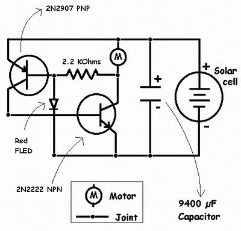

Building My First Solar Engine
After spending time reading, experimenting, and revisiting the fundamentals, I built a Flashing LED Solar Engine (FLED SE). It’s a fairly common design, but seeing my own build function correctly was still meaningful—it reinforced that hands-on experimentation is the fastest way to build confidence.
I first prototyped the circuit on a breadboard before committing to a free-form version. I paired two 4700 µF capacitors to approximate 9400 µF. In Chennai, high-capacitance capacitors often come with unnecessarily high voltage ratings, which makes them physically large and impractical for lightweight BEAM-style robots.
I eventually decided not to integrate the solar engine into a robot because the pager motor I had simply wasn’t capable of delivering enough torque. Even slight resistance caused the shaft to stall, and I wasn’t convinced the robot would be able to move reliably.
For sourcing parts in Chennai: Moore Market continues to be the most practical place to find inexpensive salvage. Broken pagers cost about ₹20 if you negotiate. You don’t need a functioning unit—just look for devices with damaged displays and harvest the motors.
I did lose three motors while trying to remove the counterweight on the shaft. The process is delicate, and it’s easy to damage the motor if you’re impatient. I eventually stopped attempting it since the failure rate outweighed the benefit.
Many popular solar engine designs use the 1381J regulator, but I never managed to find one locally. Even dismantling older electronics, including a Panasonic cordless phone, didn’t yield that component.
The red FLED I used came from Apex Electronics in Ritchie Street. The solar cells were all salvaged from old calculators I picked up at Moore Market. I removed the cells, glued them together into a small panel, and wired them in parallel. One Sanyo cell stood out for delivering consistently strong voltage and current in direct sunlight.
If you’re testing a solar engine, always test outdoors. Indoor lighting—especially tube lights—doesn’t provide enough intensity. When removing solar cells from calculator frames, avoid pulling on the fine connection wires; they’re easy to tear and extremely difficult to repair. Conductive ink is theoretically available in Ritchie Street, but in practice, reliability is hit-or-miss.

The FLED SE Workings
First, the basics
- In a NPN transistor current flows from emitter to collector. For this N(emitter) should be negative, P(base) should be positive and N(collector) should be negative.
- In a PNP transistor current flows from collector to emitter. For this P(emitter) should be positive, N(base) should be negative and P(collector) should be positive.
- Certain components like Flashing LED's, LED's etc. let current flow through them only at a particular voltage across their terminals. Let us call these components trigger elements.
The capacitor in a solar engine is essential because a solar cell alone can’t deliver enough instantaneous current to overcome a motor’s starting resistance. Instead, the system stores energy in the capacitor and releases it in short, useful bursts when the motor actually needs it.
When left unconnected, the capacitor charges from the solar cell until it reaches the lower of the two limits: the solar cell’s maximum output voltage or the capacitor’s rated voltage.
Let’s assume the motor operates best at around 3 V. That means the solar cell must be capable of generating at least 3 V under good lighting, and the capacitor must be rated to hold a charge above that threshold.
If the motor were connected directly to the capacitor, the stored energy would be dumped into the motor immediately, preventing any meaningful buildup. This is why the circuit requires a control mechanism—a way to hold the charge until it reaches the level needed for efficient motor operation. The FLED (or LED/diode), the resistor, and the PNP/NPN transistor pair provide this regulation.
As the capacitor charges from 0 V upward, both the base and emitter of the PNP transistor remain positive (the emitter directly from the capacitor, and the base through the resistor and motor). With base and emitter at similar potentials, the PNP remains off.
The PNP only turns on when the voltage across the capacitor reaches the trigger voltage of the FLED or diode. At that point, current flows through the trigger element instead of to the PNP’s base, pulling the base negative. This causes the PNP to conduct, allowing current to flow from collector to emitter.
Meanwhile, the NPN also remains off at first because both its emitter and base are negative relative to ground. For the NPN to conduct, its base must go positive. This happens only once the PNP turns on: the PNP’s conduction raises the NPN’s base potential, enabling current to flow from the capacitor through the NPN to the motor, causing the motor to run.
Interestingly, the motor keeps spinning even after the capacitor voltage drops below the FLED’s trigger point. Once the motor is in motion, the required torque is lower, so it continues running until the motor’s effective load becomes too high and the capacitor can no longer supply enough current. At that point, the motor stops, the capacitor begins charging again, and the cycle repeats.
In effect, the “start” point of the motor is governed by the trigger voltage of the FLED/diode, while the “stop” point is set by the motor’s load characteristics. These two independent thresholds give the solar engine behavior similar to a simple silicon-controlled rectifier (SCR), with distinct charge and discharge phases that repeat automatically.
Solar Engine Types
Solar engines are typically categorized into three main types, based on how they determine when to release stored energy to the motor:
- Type 1 – The motor runs when the circuit voltage reaches a defined threshold.
- Type 2 – The motor runs at fixed time intervals.
- Type 3 – The motor triggers when the capacitor’s charging rate begins to slow, essentially combining characteristics of Type 1 and Type 2.
Most practical solar engines are Type 1, as they offer a straightforward design with good overall efficiency. Type 2 designs can also be efficient and are commonly used in single-neuron solar circuits to generate phototropic (light-seeking) behavior. Type 3 designs are theoretically the most efficient, but they remain largely conceptual and are rarely implemented in practice.
Beyond using trigger elements like FLEDs, LEDs, or diodes, some solar engines rely on IC-based voltage triggers such as the 1381 series. These components provide more efficient and predictable activation. Solar engines can also be designed to trigger based on timing rather than voltage by using neuron-style circuits, which are useful for systems intended to charge during the day and activate a load at night.
Below are schematics representing the various solar engine types I’ve encountered. All schematics are the work of their original designers; I’m simply documenting and referencing them here.